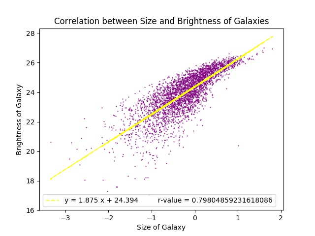
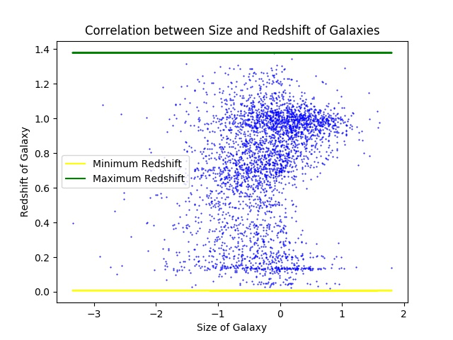
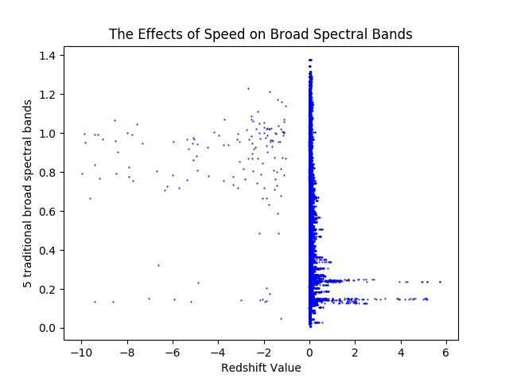

Motivation and background.
Recognizing the universe is actually expanding instead of sagnant might possibly be one of the most profound
discoveries ever made in astronomy. Scientist thought that the universe and all the galaxies in it were unchanging
and fixed without a beginning or an end. Einstein knew that gravity would attract objects together over time,
therefore, there must have been another force that counter acted the force of gravity. He called it the cosmological
constant and added it to his theory of general relativity. But when Einstein realized that the universe is not static
but actually expanding, he abandoned the constant calling it the '"biggest blunder" of his life. The astronomy community
believed that the universe is expanding but would slow down in the future. A startling discovery in recent years provided
that Einstein’s biggest blunder was actually correct! The universe was not only expanding but speeding up at a rapid pace.
To calculate how fast distant galaxies are moving away from us, we can look at the light emitted by these galaxies.
An atom or molecule gives off light at a very few particular wavelengths. When light travels towards the Earth, it loses
energy, stretching the light waves. So when a galaxy in the distance is farther away, the light it emits takes more energy
to reach us. Hence why the more distant the galaxy, the redder it appears. We can measure the redshift of these distant
galaxies and to see for ourselves how fast the universe is expanding. Another quality we can look for in these galaxies
are the size and brightness. Using the brightness of the galaxy, we can determine the chemical components of its solar
system and potentially predict if there is an area of habitable zone for life.
Dataset
The dataset is provided by the Center for Astrostatistics at Penn State University.
“The Center serves as a crossroads where researchers at the interfaces between statistics, data analysis,
astronomy, space and observational physics collaborate, develop and share methodologies, and together
prepare the next generation of researchers.”
We will be working with the CASt dataset
which contains COMBO17.dat and COMBO17.csv file. We may plan
to use DictReader function in order read the file and process the information in the file. The file
contains 65 columns about 3,462 classified galaxies with information about the brightness measurement,
Nr (object number), Total R magnitude, ApDRmap (difference between total and aperture magnitude in the
R band), Mcz and MCzml redshift estimates, and absolute magnitudes of the galaxy in the 10 bands and
their measurement errors.
Summary of research questions and results.

1) How does the brightness of galaxies affect the size of the galaxy?
We will be examining the brightness in a sequence (420 nm, UV to 915 nm, far red) given in linear variables
and the total R magnitude which is the measurement of brightness (the smaller R, the brighter). We will compare
the brightness of each galaxy and the ApDRmag (difference between total and aperture magnitude in R band), which
is the measure of the galaxy size, to compute a value to hypothesize the relationship between brightness and
galaxy size. Our end result is to examine how brighter galaxies can impact the chemical composition of the
solar system and finding life on potential new planets.
Results: The result of our graph show that there is a positive correlation between the size and
brightness of a galaxy. The greater the size of the galaxy (according to magnitude of the red band), the
brighter the galaxy. We also calculated the p-value between the size and brightness which we obtained was
0.798048592316. This is a high p-value so it shows that both elements have strong correlation (Pearson
correlation is the measure of the linear correlation between two variables on a scale of -1, negative
correlation to +1, positive correlation).
2) Categorize galaxies based on their redshift value to analyze the movement/speed.
Edwin Hubble in 1935 discovered that the universe is not held at a constant value and is fact expanding rapidly.
The space between galaxies is growing and galaxies are moving away from Earth at a tremendous value. To analyze
the groups of galaxies traveling at different speeds, we need to look at the redshift value.The faster the galaxies
is moving, the more red shifted its light is and the older the star will be. We can find the first quartile, median,
and third quartile of the galaxy’s redshift value and group them accordingly. This will show what is the most
common speed galaxies are traveling away from the Earth. Redshift value can also tell us whether we have more
young or old stars in our data set compared to the sun.
729 galaxies have a speed between 0 and 0.405.
1008 galaxies have a speed between 0.405 and 0.81.
346 galaxies have a speed between 0.81 and 0.905.
1379 galaxies have a speed between 0.905 and 1.
21.0571923744 % of galaxies are moving at a very slow pace
29.116117851 % of galaxies are moving at a slow pace
9.99422299249 % of galaxies are moving at a fast pace
39.8324667822 % of galaxies are moving at a very fast pace
Results: A majority of the galaxies are moving in the fastest category. Because 39.83% of galaxies are
moving at a faster redshift value rate, we can conclude that many of the galaxies that we can detect are
farther away from the Earth and more likely to be older than our sun.
3) How does the size of the bands of a galaxy affect the red shift values of a galaxy?

Looking at previous data about the red shift value is, we can better compare the rate of movement of each
galaxy with their absolute magnitude of their bands. The bands are a clear indicator of the galaxy size
which can provide a better understanding of galaxies characteristics.
The greater their band there is
can potentially affect the overall characteristics between its growth and brightness. Using the previous
data from question two, we can better understand the correlation between galaxy size and speed. This information
will help astronomical scientists develop insight on varying characteristics of galaxies and see if there is a
pattern in their mechanism and physical size.
Results: The size of our galaxy does not seem to have any correlation with the red shift values of the
galaxy. As observed from our graph, there is a random scatterplot of values that shows no correlation.

4) Find the effect of redshift on observed brightnesses in 13 bands.
Each of the galaxies in our data set gives off a unique value of brightness and color to to the galaxy’s
chemical composition. But as the galaxies reset farther away from Earth, their light gets distorted and
stretched into longer wavelengths. The photons lose energy as they travel and that is why farther galaxies
look more red than closer ones. Researching the observed brightnesses in 13 bands from 420 nm in the
ultraviolet to 915 nm in the far red, we will see if the majority of our detected galaxies are redshifted
or can still be observed in other color ranges.
Results: We can observe galaxies in different color spectrums but a majority of them lie between
650 - 800 nm for color which equates to red. This indicates most of the observed galaxies are far away
from us or is currently moving away.
Testing
In our main.py file, we tested our code using assert statements. Since we could
not really test the plots itself, we checked if our program was running efficiently
and taking in correct data by comparing the length of each column/list to make sure
they are equivalent. we are comparing each component (brightness, size, etc.) to make
sure we grabbed the correct information from our dataset. We added assert statements
to get_min_max_redshift to check the minimum and maximum value. We also added assert
statements to galaxy_speed to make sure that all of the categories added together
equal the total and that all of the categories added up to 100%. Other possible testing
strategies that could have been implemented would be to use smaller test files or just
one column of the data to check.